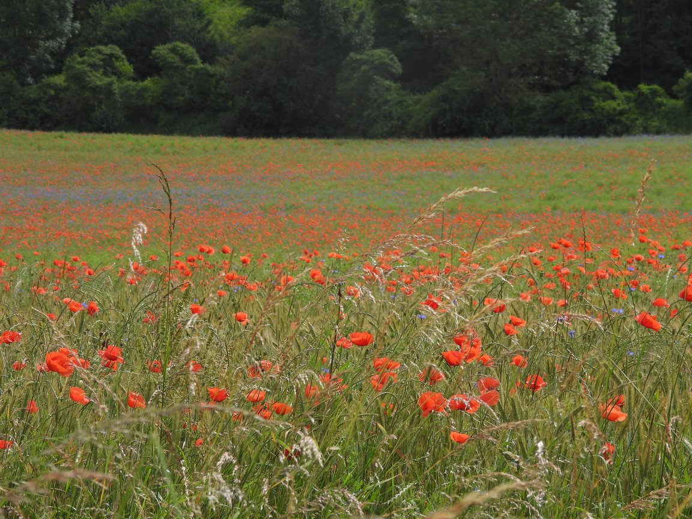
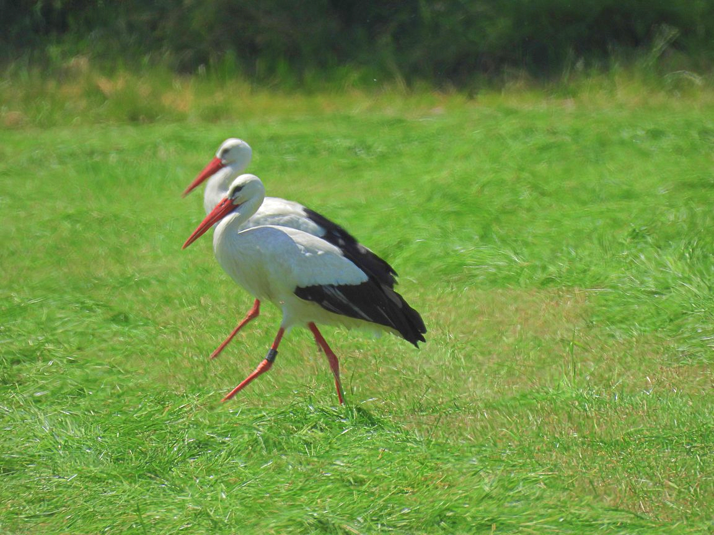

17.06.2024 - 05.07.2024
Oberstdorf - Flensburg - Westerland
Etappenübersicht
Tag 1
Kirchheim u. Teck nach Wendlingen Bahnhof
mit der Deutschen Bahn über Ulm nach Oberstdorf
mit dem Fahrrad zur Schanze Oberstdorf und dann bis nach Kempten
Tag 2
Kempten im Allgäu nach Neu-Ulm (Brickstone Hostel)
Tag 3
Neu-Ulm nach Crailsheim
Tag 4
Crailsheim nach Würzburg
Tag 5
Würzburg nach Gersfeld (Rhön)
Tag 6
Gersfeld (Rhön) über die Wasserkuppe nach Tann (Rhön)
Tag 7
Tann (Rhön) zur Villa Velo bei Eschwege in Hessen
Tag 8
Eschwege nach Bad Lauterberg im Harz
Tag 9
Bad Lauterberg bis Braunlage (aufgrund Probleme mit der Gangschaltung)
Tag 10
Braunlage über den Brocken bis zur Jugendherberge Braunschweig
Tag 11
Braunschweig nach Hitzacker (Elbe) zum Destinature Dorf
längste Etappe mit 140 km
Tag 12
Hitzacker (Elbe) bis zum Wohnmobilstellplatz Trittau
Tag 13 & Tag 14
Trittau nach Kiel
Besuch beim Fahrradhersteller myboo
Tag 15
Kiel nach Flensburg
Tag 16
Flensburg nach Østerby auf der Insel Rømø in Dänemark
Tag 17
Havneby (Fähranleger Syltfähre) nach List auf Sylt
List nach Westerland
Tag 18
Rückfahrt mit der Deutschen Bahn von Westerland über Hamburg (Altona) und Heidelberg nach Stuttgart Hbf
Tag 19
Ankunft in Stuttgart
Rückfahrt mit dem Fahrrad nach Kirchheim u. Teck
Reisebericht mit Bildern
Tag 1
Nach langer und ausführlicher Vorbereitung geht es endlich los. Zunächst fahre ich zum Bahnhof Wendlingen, um dort um 10:20 Uhr mit dem Zug nach Ulm zu fahren. Von dort geht es dann mit dem RE75 bis nach Oberstdorf. Dort angekommen, fahre ich mit dem Fahrrad bis zur Schanze in Oberstdorf und mache beim Schanzenwirt eine Mittagspause. Gut gestärkt mache ich mich auf den Weg nach Kempten.
Tag 2
Nach einem kurzen Stopp bei einem Bäcker in Kempten geht es immer am Illertalradweg entlang Richtung Neu-Ulm. Leider muss ich aufgrund von Unwettern und Überschwemmungen in den Wochen zuvor ständig Umleitungen in Kauf nehmen, da an manchen Stellen der Radweg weggespült wurde.

Tag 3
Auf dem Weg von Neu-Ulm nach Crailsheim fahre ich immer wieder an endlosen Mohnfeldern vorbei. So ein Anblick entschädigt für alle Anstrengungen.

Tag 4
Ähnlich wie am Vortag fahre ich auch heute wieder an Mohnfeldern vorbei. Auf abgemähten Wiesen stehen ganze Gruppen von Störchen. Endziel dieser Etappe ist Würzburg. Dort kann ich bei einem Bekannten übernachten.
